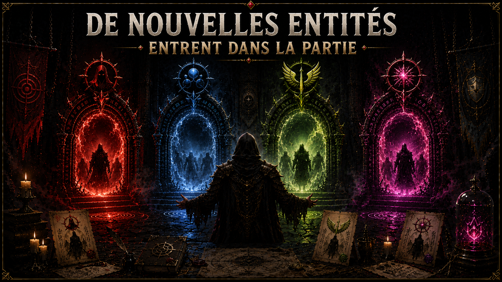
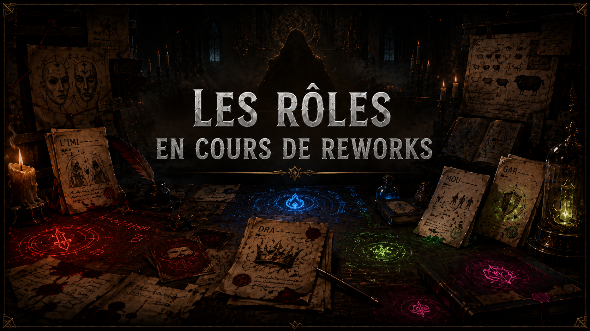

Saison 1 · 3 mois · Active
L'Aube des Légendes
La guerre commence ici. Les rôles s'éveillent.
Fondation · Guerre Classique · Or & Noir
La première saison. Les rôles fondateurs. Mécaniques lisibles, contrats clairs — l'idéal pour découvrir Among Legend.

Rôles Alliés 6 rôles
Rôles Méchants 4 rôles
Rôles Neutres 4 rôles
Exclusifs Événement 2 rôles · tirage rare
Saison 2 · 3 mois · Bientôt
Le Pacte des Ombres
L'information est une arme. La confiance est un piège.
Trahison · Politique · Espionnage · Violet & Argent
Les contrats deviennent liés. Certains joueurs savent des choses que les autres ignorent. La manipulation sociale entre dans le jeu.
Rôles Alliés 5 rôles
Rôles Méchants 4 rôles
Rôles Neutres 4 rôles
Exclusifs Événement 2 rôles · tirage rare
Saison 3 · 3 mois · À venir
La Tempête de Feu
Il n'y a plus de règles. Il n'y a que des survivants.
Chaos · Guerre Totale · Destruction · Rouge & Orange
Les contrats évoluent en cours de partie. L'imprévisibilité devient une arme. Certains rôles se nourrissent du chaos des autres.
Rôles Alliés 5 rôles
Rôles Méchants 4 rôles
Rôles Neutres 4 rôles
Exclusifs Événement 2 rôles · tirage rare
Saison 4 · 3 mois · Légendaire
Le Crépuscule des Dieux
Les dieux se retirent. Les légendes demeurent.
Fin de Cycle · Mythologie · Légendaire · Bleu Nuit & Blanc Glacé
La saison finale. Rôles légendaires, mécaniques uniques jamais vues. Si difficiles à deviner que certains pensent qu'ils n'existent pas.
Rôles Alliés 5 rôles
Rôles Méchants 4 rôles
Rôles Neutres 4 rôles
Exclusifs Événement 2 rôles · tirage rare
✦ Nouvelles du Conseil ✦
De nouvelles entités entrent dans la partie
Saison 2 — Le Pacte des Ombres · Bientôt


Nouveau · Saison 2
Le Diplomate
"Il ne gagne pas les guerres. Il évite qu'elles commencent. Et personne ne réalise jamais que c'est lui qui maintenait l'équilibre."
🔒 Disponible en Saison 2
Nouveau · Saison 2
L'Imitateur
"Il n'a pas d'identité fixe. Seulement des reflets empruntés. Chaque élimination le transforme… jusqu'à ce que plus personne ne sache qui il est devenu."
🔒 Disponible en Saison 2
Événement · Saison 2
L'Espion
"Il était dans ta propre équipe depuis le début. Ses ordres venaient d'ailleurs. Et chaque ping qu'il faisait… était un mensonge calculé."
🔒 Rôle événement · Tirage rare
Événement · Saison 2
La Taupe
"Elle n'a pas trahi. Elle a simplement choisi au bon moment. Et à la 15e minute… elle n'était plus la même."
🔒 Rôle événement · Tirage rare
Aperçu · Saison 3
Le Berserk
"Chaque fois qu'un allié brillait, quelque chose en lui se brisait. Et il réagissait. Toujours. Sans pouvoir s'en empêcher."
🔒 Disponible en Saison 3
Mystère · Saison 4
??? Le Dieu Déchu
"Il commence avec 3 points. À la 20e minute, il n'est plus le même. Et si tu le devines… il te le fera payer."
🔒 Rôle légendaire · Saison finale
Among Legend
Règles créées par RBXIT et toute la team
V2.0 · 4 Saisons